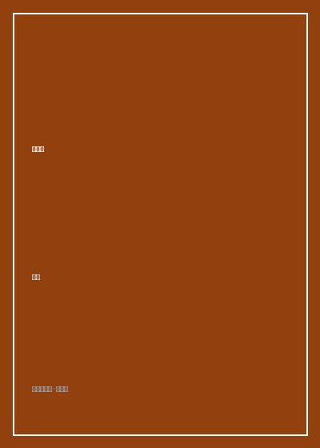

《蚁族》

总体观点
《蚁族：大学毕业生聚居村时代纪实》是当代中国社会转型期最具震撼力与学术开创性的实证社会学力作。北京大学博士后廉思带领科研课题组深入北京唐家岭、小关、马连洼等城乡接合部村庄，首次将镜头对准了一个庞大却被主流视野遮蔽的特殊群体——受过高等教育、初出茅庐、收入微薄却怀揣阶层跃迁梦想，大规模群租聚居在城市边缘的年轻毕业生，并为之创造了铭刻历史的名词：“蚁族”。
全书以严谨的问卷统计与大量带着体温的深度访谈相交织，全方位刻画了“高智、弱势、群居”的蚁族生态。作者深刻剖析了中国高等教育由精英化向大众化转轨过程中，大学学历溢价衰退与大城市劳动力市场结构性错配的尖锐矛盾；揭示了青年一代在承受着高昂生活成本、严酷户籍壁垒与非正规就业压力的同时，依然以蚂蚁般的坚韧、抱团取暖的微光，守护着关于尊严与梦想的微弱火种。
本书不仅是中国城市化进程中城乡二元结构缝隙的深情见证，更引发了国家高层与全社会对大学毕业生就业制度、大城市城中村改造、保障性住房政策以及青年社会阶层流动通道受阻等重大命题的深刻反思与制度变革。
核心观点
-
1. 蚁族群体的三大基本特征：高智、弱势与群居
他们不同于传统农民工，拥有大专及以上高等学历；不同于城市中产，处于低收入与非正规就业的脆弱底层；他们像蚂蚁般群居于狭小的城中村出租屋中。
在唐家岭的一个几平方米昏暗隔断间内，往往上下铺挤住着四名拥有计算机或外语本科学历的年轻人，月均收入甚至低于同村开小卖部或开黑车的本地租户。 -
2. 教育文凭的边际效益递减：从天之骄子到普通劳动者
高校大扩招打破了精英垄断，但大学毕业生的社会供给增速远超大城市高附加值白领岗位的吸纳能力，导致学历文凭从昔日的“阶层跃升保证书”退化为“基础门槛”。
调研数据显示，超过半数的聚居区毕业生从事销售、客服、保险代理等底薪提成制岗位，其起薪水平与没有上过大学的同龄体力劳动者相差无几。 -
3. 回不去的故乡与融不进的城市：空间漂泊与双重身份割裂
作为家族中寄托厚望的“第一代大学生”，他们承载着乡村老家的崇高期许而无法退回县城乡村；但在繁华都市中，又因无房无户籍而始终被排斥在市民公共服务之外。
一位受访的农村大学生坦陈：“老家父母以为我在北京写字楼里当大老板，其实我每天吃两块钱的煎饼果子、挤两个小时公交，逢年过节根本不敢回家，怕让父母失望。” -
4. 苦难中的尊严与微光：低成本聚居所维系的希望网络
聚居村低廉的房租与生活成本为青年人提供了对抗城市淘汰的最后缓冲垫。村落里彼此相似的奋斗境遇与情感取暖，支撑着他们不被严苛的生活击垮。
合租室友之间自发分摊煤气罐费用、共享求职面试西装，深夜在村口路边摊畅谈创业梦想与哲学文学，展现出令人动容的青年生命韧性。 -
5. 制度阻隔与青年发展：呼唤包容性城市化公共治理
不能将青年聚居简单视作有碍市容的治安隐患，而应当视为城市生命力的重要源泉。唯有通过健全保障房供给、破除二元就业壁垒，方能打通社会流动渠道。
书中的呼吁直接推动了唐家岭整建制改造后青年公租房模式的探索，为后续全国多地出台针对刚毕业大学生的青年驿站政策提供了决策参照。
全书结构
-
第一篇：聚焦唐家岭——北京“蚁族”的生存日常与空间形态
走进北京海淀区唐家岭村，详尽描绘低矮违建、拥挤隔断房、拥堵的公交车站以及青年群体微薄的每日恩格尔系数。
记录每天早晨七点数千名提着公文包的年轻人在村口小桥边排起百米长队挤上365路公交车进城上班的震撼场景。 -
第二篇：精神世界与情感羁绊——理想在现实缝隙中的拔节
深度探询受访者的求职创伤、异地恋情破裂、亲情负担以及在冷漠都市中寻找意义的精神求索历程。
记录一位中文系女毕业生在经历了十几次求职被拒后，如何在狭小合租屋的墙壁上抄满食指的《相信未来》激励自己。 -
第三篇：群体测量与实证数据——结构性困境的定量透视
公布数百份详尽问卷统计，从受教育层次、户籍来源、薪资区间、健康状况及社会交往维度对蚁族进行科学画像。
以详实数据图表证明蚁族绝非“好逸恶劳者”，其平均每周工时超过55小时，却有高达60%的人月薪在2000元以下。 -
第四篇：社会阶层流动与政策反思——时代大潮下的青年出路
跳出微观叙事，从政治经济学与公共政策高度，反思中国城市二元结构、教育产业化以及青年社会融入的制度破局路径。
系统建言政府将城中村改造与大学毕业生廉租房建设相结合，设立青年创业孵化基地以降低阶层流动的制度门槛。